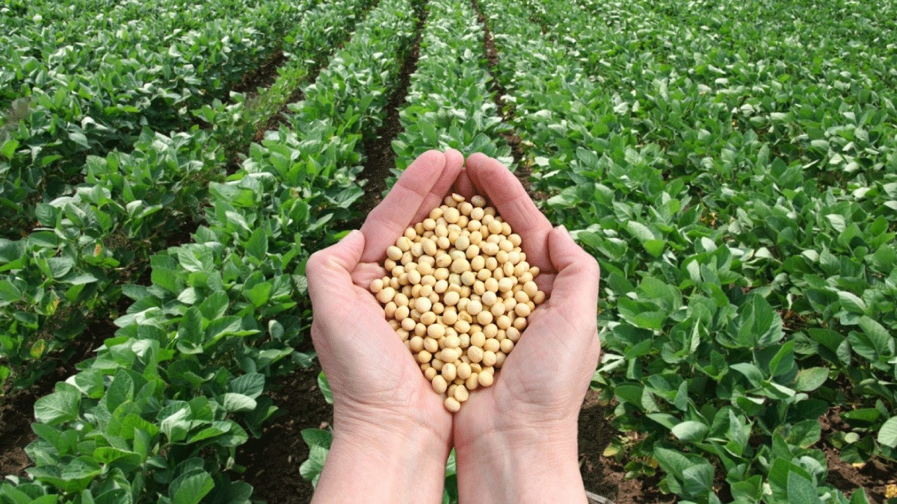
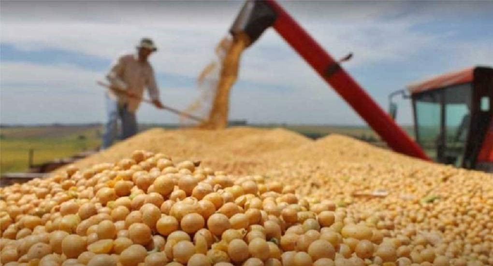
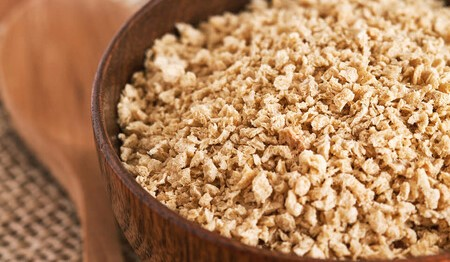
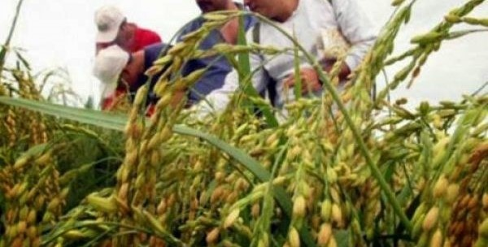
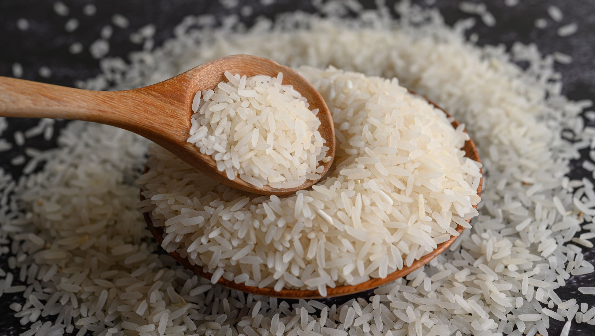
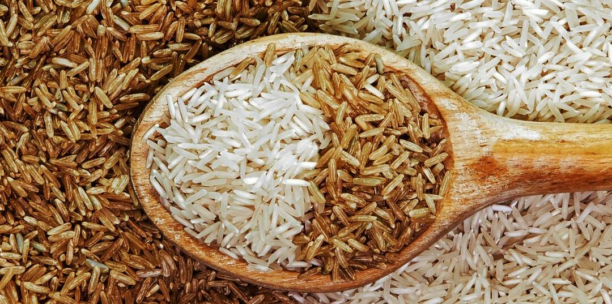
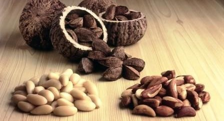
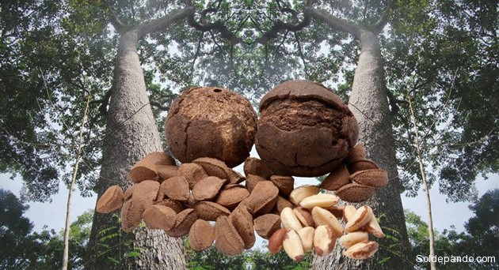
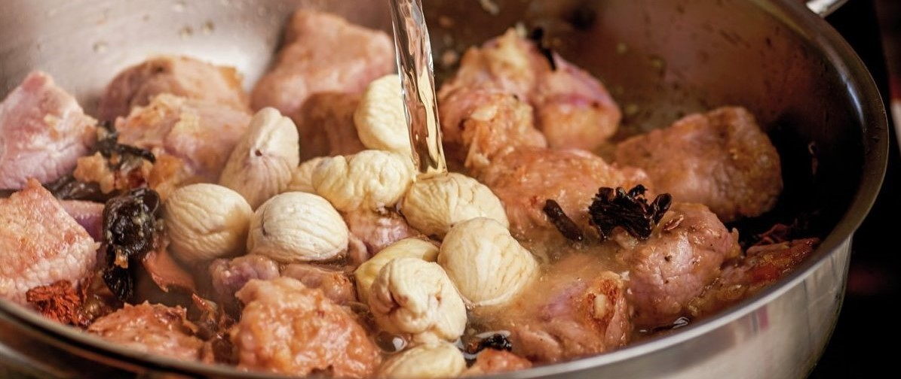

Oriente de Bolivia
Santa Cruz
- Un cultivo estratégico: La soya es uno de los principales productos de exportación de Bolivia, generando importantes ingresos para el país. Variedad de productos: Además de la soya en grano, se producen una gran variedad de subproductos como aceite de soya, harina de soya y lecitina, utilizados en la industria alimentaria, la producción de biocombustibles y otros sectores.
- Motor de la economía cruceña: La producción de soya genera miles de empleos directos e indirectos, impulsando el desarrollo económico de Santa Cruz. Cadena de valor: La soya ha generado una importante cadena de valor, desde la producción de semillas hasta la industrialización y comercialización de los productos derivados.
- Dos campañas: En Santa Cruz, la soya se cultiva en dos campañas: verano e invierno, lo que permite aprovechar al máximo las condiciones climáticas. Exportaciones: Bolivia exporta soya a varios países del mundo, principalmente a los países vecinos.
- 
- 
- 
Canción emblemática de Santa Cruz
- 
- 
- 
Canción emblemática de Beni
Beni
- Calidad superior: El arroz beniano es reconocido por su calidad, con granos grandes y un sabor característico. Las condiciones climáticas y de suelo de la región contribuyen a su excelente calidad. Variedades: Se cultivan diversas variedades de arroz en el Beni, adaptadas a las diferentes condiciones agroecológicas de la región.
- Motor de la economía beniana: La producción de arroz genera empleo y dinamiza la economía de numerosas comunidades del Beni. Seguridad alimentaria: El arroz es un alimento básico en la dieta de los bolivianos, y el Beni contribuye significativamente a garantizar la seguridad alimentaria del país.
- Complejo Industrial Arrocero: El Beni cuenta con un moderno complejo industrial arrocero que permite procesar el arroz y producir una amplia gama de productos derivados, como arroz blanco, arroz integral, harina de arroz y otros. Festividades: La producción de arroz es motivo de celebración en muchas comunidades benianas, con festividades que destacan la importancia de este cultivo.
Pando
- Un árbol majestuoso: El castaño es un árbol de gran tamaño y longevidad, que puede alcanzar hasta 50 metros de altura y vivir varios siglos. Recolección artesanal: La recolección de castaña es una actividad tradicional que se realiza de manera artesanal. Los castañeros escalan los árboles o utilizan herramientas rudimentarias para derribar los cocos, los cuales contienen las castañas.
- Motor económico: La castaña es uno de los principales productos de exportación de Bolivia, generando importantes ingresos para el departamento de Pando y para el país en su conjunto. Conservación de los bosques: La castaña es un producto no maderable que promueve la conservación de los bosques amazónicos, ya que su explotación sostenible depende de la salud de estos ecosistemas.
- Comercio informal: El comercio informal de la castaña limita las oportunidades para los productores y perjudica la imagen del producto a nivel internacional. Cambio climático: El cambio climático afecta los patrones de lluvia y las temperaturas, lo que puede influir en la producción de castaña.
- 
- 
- 
Canción emblemática de Pando